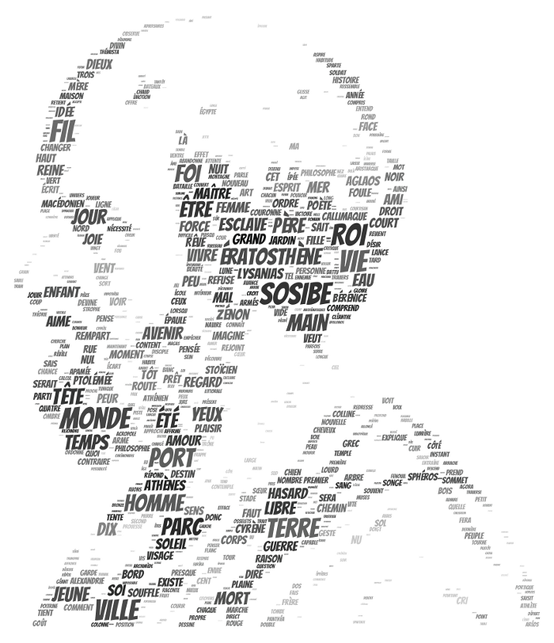

12 slogans pour Ératosthène
C’est parti. Mon Ératosthène est disponible dans toutes les librairies à partir de maintenant. Un roman polyphonique ne peut avoir qu’un slogan, à vous de choisir celui qui vous donnera envie de craquer quelques euros.
- Un Game of Thrones antique, avec guerres et trahisons, sexe et passion, où philosophie et science remplacent la magie.
- On parle toujours de l’Ératosthène géographe, on oublie le mathématicien, le poète, l’historien, le haut fonctionnaire alexandrin, et surtout l’immense philosophe.
- La vie d’un touche-à-tout de génie, qui a fait de l’éclectisme un art de vivre.
- Des rencontres extraordinaires, avec des célébrités comme Bérénice ou Archimède, des oubliés comme Aristarque ou Callimaque, des philosophes comme Bion ou Zénon, et d’innombrables crapules.
- L’histoire de l’homme qui a mesuré la Terre et pensé pour la première fois qu’on pouvait en faire le tour.
- Ératosthène a refusé de s’enfermer dans une école et toutes les écoles l’ont méticuleusement ridiculisé, jusqu’à ce qu’on l’oublie durant 2000 ans.
- Quand tout change pour le pire, être heureux reste possible si on imagine la suite.
- Une critique d’aujourd’hui à l’aune des échecs d’hier.
- L’itinéraire d’un homme libre.
- Salammbô c’était à Carthage, Ératosthène c’était en Alexandrie, au même moment, deux histoires de Méditerranée.
- Rien ne doit changer pour que tout se transforme.
- Le récit de mon amitié avec un Grec né il y a plus de 2000 ans.
Plus…
- L’histoire du premier hacker (définition : personne qui subvertit le système).
- Ou comment transformer un ancien en moderne.
- À la recherche du moderne derrière l’antique.